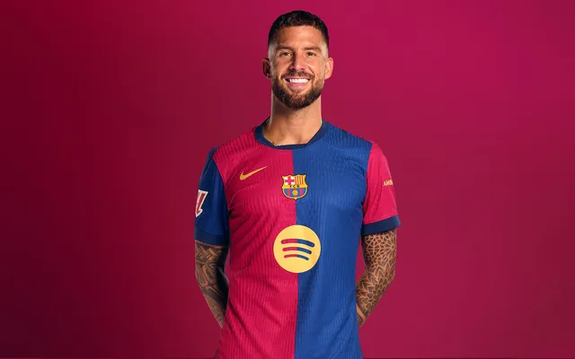
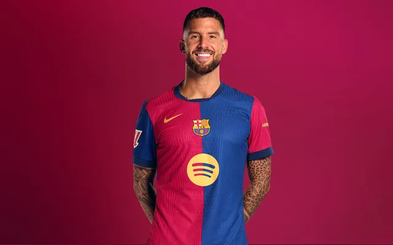

HISTORIA
1899-09. NACIMIENTO Y SUPERVICENCIA
Joan Gamper, fundador del Club, fue su ánima e impulsor durante los primeros 25 años de vida.
La aventura de la creación del FC Barcelona en 1899 por un grupo de jóvenes, extranjeros y catalanes que vivían en Barcelona, fue la consecuencia de un proceso de expansión de la práctica del fútbol y otros deportes de origen británico en el continente europeo.
FUNDACIÓN DEL CLUB
Hans Gamper (Winterthur, Suiza, 1877 - Barcelona,1930) llegó a Barcelona en 1898
por motivos profesionales.
El 22 de octubre de 1899 Gamper publica un anuncio en la revista Los Deportes
haciendo un llamamiento para formar un equipo de fútbol.
El 29 de noviembre, Gamper y once hombres más (los suizos Otto Kunzle y Walter
Wild, los ingleses John y William Parsons, el alemán Otto Maier y los catalanes
Lluís d'Ossó, Bartomeu Terrades, el aragónes Enric Ducay, Pere Cabot, Carles Pujol
y Josep Llobet) se reúnen en el Gimnàs Solé para formar una asociación que llevará
el nombre y el escudo de la ciudad: el FC Barcelona.
EL PRIMER ESCUDO
El FC Barcelona utilizó el mismo escudo que Barcelona en una muestra de la
voluntad que tenía de identificarse con la ciudad que le acogía y de fundirse.
En 1910 la Junta Directiva, que quería que el Club dispusiera de un símbolo
propio, convoca un concurso para cambiar el distintivo de la Entidad, y se adopta
el formato que con más o menos variaciones ha llegado hasta nuestros días.
LA PRIMERA EQUIPACIÓN
En aquellos primeros momentos media camiseta era azul y la otra media, grana, con las mangas del color inverso y los pantalones blancos. La teoría más probable indica que los colores azul y grana provienen de la indumentaria del equipo de rugby de la escuela inglesa Merchant Taylors', donde los hermanos Witty, unos de los primeros socios del Club, habían estudiado en su primera juventud.
LOS PRIMEROS CAMPOS
En menos de diez años, entre 1899 y 1908, el FC Barcelona utilizó cuatro terrenos
de juego diferentes como campo propio, debido a la inestabilidad económica y la
dificultad para encontrar espacios al aire libre de grandes dimensiones en plena
expansión urbanística de la ciudad.
1899-1900 Campo del antiguo velódromo de la Bonanova (junto a la actual Turó Parc)
1900-1901 Campo del hotel Casanovas (hoy, Hospital de Sant Pau)
1901-1905 Campo de la carretera de Horta
1905-1909 Campo de la calle de Muntaner
LA COPA MACAYA, EL PRIMER TÍTULO
En 1902 el FC Barcelona gana la Copa Macaya, embrión del Campeonato de Catalunya. Nació gracias a la voluntad de Alfonso Macaya, presidente del Club Hispania, que en 1900 hizo pública su intención de organizar una competición entre equipos catalanes. El trofeo es una excepcional obra de arte modernista, pero desgraciadamente la Copa Macaya desapareció un año después con la creación del Campeonato de Catalunya.
INICIOHIMNO
Tot el camp
és un clam
som la gent blaugrana.
Tant se val d’on
venim
si del sud o del nord
ara estem d’acord, estem d’acord,
una bandera ens agermana.
Blaugrana al vent
un crit valent
tenim un nom
el sap tothom:
Barça, Barça, Barça!
Jugadors
Seguidors
tots units fem força.
Són molts anys plens d’afanys,
són molts gols que hem cridat
i s’ha demostrat, s’ha demostrat,
que mai ningú no ens podrà tòrcer.
Blaugrana al vent
un crit valent
tenim un nom
el sap tothom:
Barça, Barça, Barça!
Escuchar Himno en Youtube
INICIOEQUIPO MASCULINO
GUARDAMETAS


DEFENSAS


 

CENTRO CAMPISTAS


DELANTEROS